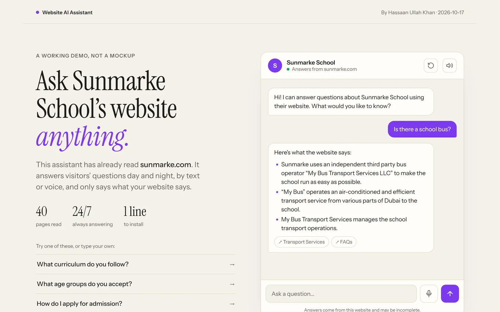
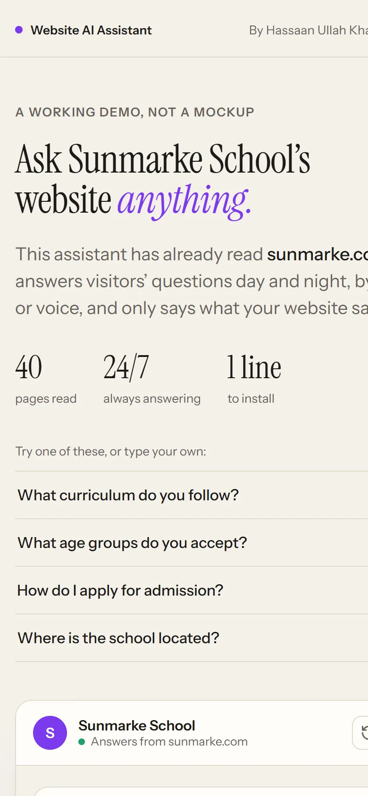

01
Website AI Assistant
A chat assistant that reads a business’s website and answers visitors’ questions from it, by text or voice, with a link to the page each answer came from.
- The problem
- Visitors leave when they can’t find fees, hours or “how do I book” in a few seconds, and staff answer the same questions all day.
- What I built
- A crawler that reads the site politely, a search index tuned for the questions customers actually ask, an AI answer step that only uses the site’s own words, and a one-line widget that works on WordPress, Wix, Shopify or custom sites.
- Details
- Voice input and read-aloud, phone layout, rate limiting, a report of questions the website doesn’t answer, and 28 automated tests.
Python · Flask · BM25 retrieval · LLMs via OpenRouter · Vanilla JS